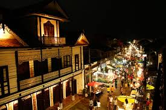
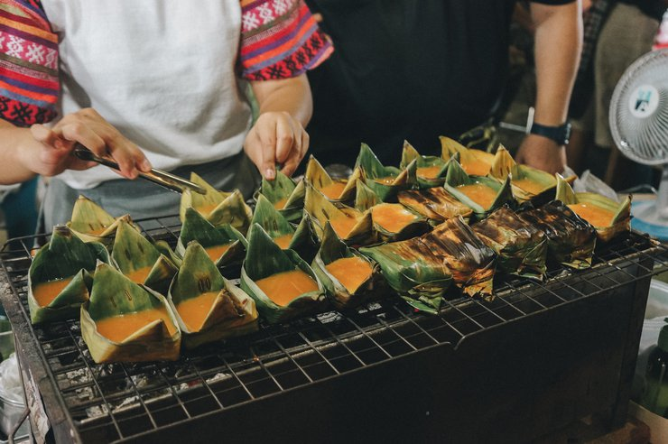

History Info
Kad Kong Ta (กาดกองต้า), or Talad Gao (Old Market), is a popular weekend walking street in Lampang, Thailand, held every Saturday and Sunday evening on Talad Gao Road near the Ratchadapisek Bridge. The market features food stalls, local products, clothing, and historic century-old wooden houses with blended architecture
The market is situated in a historic area known for its traditional houses. It's a key attraction for experiencing local culture and food in Lampang.
️🌟 Highlights
- Historic Architecture The primary highlight is the street's century-old buildings, which showcase a rare blend of Lanna, Chinese, Burmese, and European styles.
- Must-Try Local Food The market is a paradise for budget-friendly northern delicacies
- Artisan Shopping & Street Art
- Cultural Street Art & Murals
- Horse Carriage Hub
- The Hidden Riverside Alleys & "Baan Louis"
information for tourists
📍Location Talad Gao Road, along the Wang River near Ratchadapisek Bridge, Lampang.
⏰ Open and Closed time:Every Saturday and Sunday evening. 06:00 - 18:00 น.
💰 Budget : 200-500 Bath For snacks and handcrafts
🚗 Travels:20-25 minute walk from many central spots
️ Parking lot: Parking lots near a Wang River
📸 Time for Good photos:Morning and evening

Snacks Recommended

🍜 Lampang Foods you had to dont miss
- ✓ savory Kanom Tuay Jeen (steamed rice bowls with toppings)
- ✓ crispy Roti
- ✓ grilled Thai sausages/meat skewers
- ✓ fresh-cut cheese chips
- ✓ northern Kanom Jeen Nam Ngiao
🎁 Handscraft
- ✓ Famous Ceramics
- ✓
- ✓ Local Crafts & Handmade Goods
- ✓Edible Souvenirs
- ✓ "Gong Ta" Brand Souvenirs (Local Art Prints)

gallery
